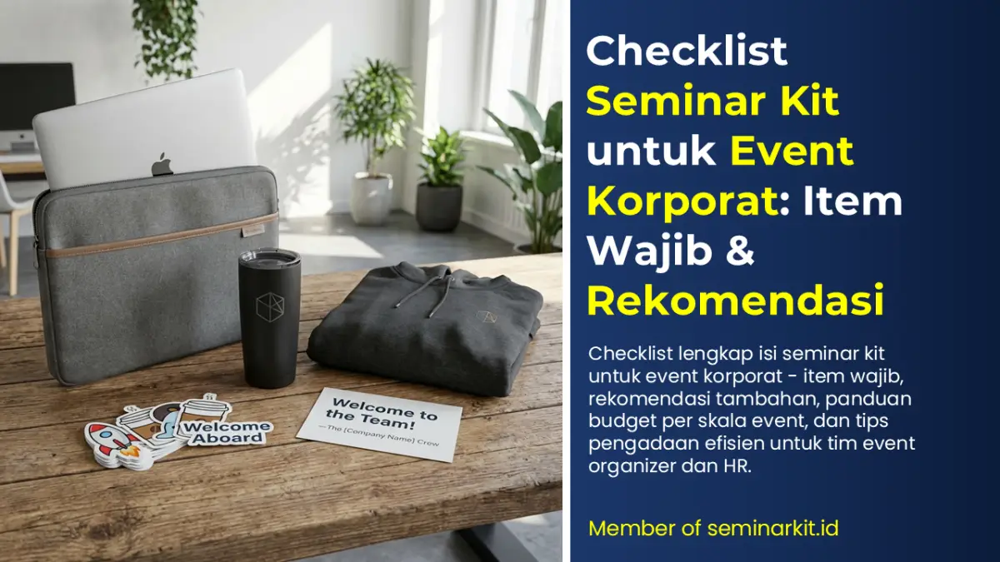
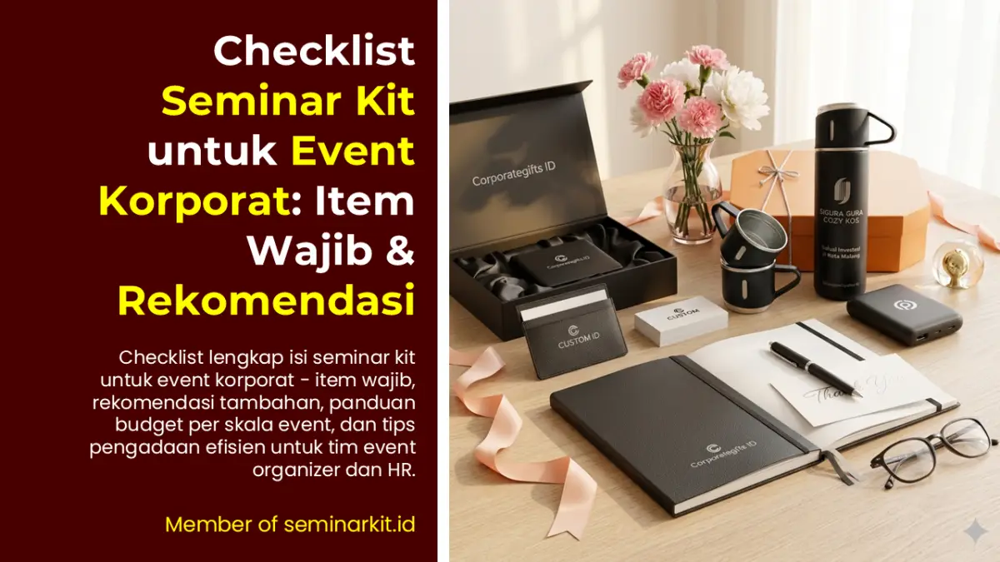

Seminar kit adalah salah satu elemen yang paling sering dianggap sepele dalam perencanaan event korporat — tapi justru salah satu yang paling berdampak pada kesan peserta. Bayangkan: peserta hadir di sebuah konferensi profesional, lalu mendapatkan tas murah berisi pulpen rusak dan notebook tipis yang langsung sobek saat pertama kali dibuka. Kesan itu akan sulit dihapus, apa pun seberapa bagus konten acaranya.
Sebaliknya, seminar kit yang dikurasi dengan baik — produk berkualitas, branding konsisten, dan dikemas rapi — menciptakan kesan profesionalisme yang bertahan jauh melampaui hari acara.
Artikel ini memberikan checklist lengkap seminar kit untuk event korporat, disertai panduan memilih produk, tips menyesuaikan dengan skala event, dan strategi pengadaan yang efisien. Cocok untuk tim event organizer, HR, dan purchasing yang ingin memastikan seminar kit mereka benar-benar fungsional, berkesan, dan on-budget.
Apa Itu Seminar Kit dan Mengapa Penting?
Seminar kit adalah paket perlengkapan yang diberikan kepada peserta sebuah acara — bisa berupa seminar, konferensi, workshop, pelatihan, gathering korporat, atau event sejenisnya. Isi seminar kit bervariasi tergantung jenis acara, profil peserta, dan budget yang tersedia.
Fungsi Seminar Kit dalam Event Korporat
Fungsi Praktis: Memberikan peserta alat yang mereka butuhkan selama acara berlangsung — tempat mencatat, alat tulis, tempat minum, dan wadah membawa perlengkapan.
Fungsi Branding: Setiap item dalam seminar kit yang berlogo perusahaan atau penyelenggara adalah media promosi bergerak. Peserta yang membawa pulang tas seminar kit Anda adalah "brand ambassador" tanpa biaya tambahan.
Fungsi Pengalaman: Seminar kit yang berkualitas menambah nilai keseluruhan pengalaman peserta dan menciptakan kesan positif terhadap penyelenggara. Ini secara langsung memengaruhi penilaian peserta terhadap event Anda.
Fungsi Kenang-kenangan: Produk seminar kit yang dipakai sehari-hari (tumbler, tote bag, notebook) terus mengingatkan peserta pada event dan penyelenggara — memperpanjang dampak event melampaui hari pelaksanaan.
Checklist Seminar Kit: Item Wajib dan Item Pelengkap
WAJIB ADA (Core Items)
Berikut adalah item yang sebaiknya selalu ada di setiap seminar kit korporat, terlepas dari budget atau skala event:
1. Tas Seminar Kit
Ini adalah "wadah" dari semua item lainnya — sekaligus item yang paling sering dibawa pulang dan digunakan kembali oleh peserta.
Opsi yang tersedia:
- Tas spunbond non-woven — Paling ekonomis, cocok untuk event massal (500+ pax). Tahan penggunaan ringan, mudah dicetak logo
- Tote bag canvas — Lebih premium, tahan lama, cocok untuk event berkelas menengah ke atas (100–500 pax)
- Tas slempang / sling bag — Fungsional, bisa dipakai sehari-hari, kesan lebih modern
- Tas ransel kecil — Paling premium, cocok untuk event eksklusif atau konferensi nasional
- Document bag / map seminar — Alternatif ekonomis berupa map atau folder, cocok jika seminar bersifat formal dan konten dokumen banyak
Tips memilih tas: Perhatikan ukuran handle (kenyamanan jinjing), kekuatan jahitan, dan ukuran tas apakah cukup untuk menampung semua item lainnya.
2. Notebook / Buku Catatan
Fungsi utama: tempat peserta mencatat poin-poin penting selama sesi berlangsung. Peserta yang aktif mencatat cenderung lebih engaged dan puas dengan acara.
Spesifikasi yang perlu diperhatikan:
- Ukuran: A5 paling populer (praktis, cukup ruang menulis tapi tidak berat). A4 terlalu besar, B6 terlalu kecil
- Jumlah halaman: Minimal 80–100 lembar isi untuk acara lebih dari 1 hari
- Jenis kertas: Pilih kertas HVS putih minimal 70 gram agar tidak tembus saat menulis dengan pulpen biasa
- Cover: Hard cover dengan logo perusahaan memberikan kesan premium. Soft cover lebih ringan dan ekonomis
- Binding: Spiral binding lebih fleksibel untuk menulis, perfect binding terlihat lebih profesional
Custom branding: Cetak logo dan nama event di cover. Opsional: cetak agenda acara atau informasi penting di halaman pertama.
3. Pulpen / Ballpoint
Tidak ada gunanya notebook tanpa alat tulis yang berfungsi dengan baik. Pulpen adalah item yang paling "diuji" oleh peserta dalam 30 detik pertama membuka seminar kit.
Kesalahan umum: memilih pulpen termurah yang tintanya macet atau tulisannya tidak lancar. Ini langsung merusak kesan pertama.
Rekomendasi:
- Pilih pulpen dengan tinta berbasis gel atau ballpoint premium yang menulis dengan lancar
- Berat pulpen yang ideal: 10–15 gram (tidak terlalu ringan / terasa murahan)
- Pastikan klip pulpen cukup kuat (sering dipakai untuk menjepit di saku atau tas)
- Branding logo bisa dicetak di body pulpen menggunakan metode sablon atau laser engraving
Rekomendasi artikel lainnya:
- Perbedaan Merchandise, Corporate Gift, dan Hampers — Kapan Menggunakan Masing-masing?
- Panduan Hampers Perusahaan: Produk, Budget, dan Tips Distribusi Massal
- Cara Memilih Tumbler Custom untuk Souvenir Kantor Perusahaan
- Onboarding Kit Karyawan Baru: Apa Saja yang Perlu Disertakan?
4. Tumbler atau Botol Minum
Ini adalah item paling bernilai dalam seminar kit modern — sekaligus yang paling sering dibawa pulang dan digunakan kembali oleh peserta.
Dengan tren pengurangan sampah plastik, memberikan tumbler branded menggantikan air minum botol plastik juga memberikan nilai tambah citra ramah lingkungan bagi perusahaan Anda.
Panduan lebih lengkap memilih tumbler dapat dibaca di artikel khusus: Cara Memilih Tumbler Custom untuk Souvenir Kantor Perusahaan
Untuk seminar kit, pilihan yang paling tepat:
- Tumbler stainless 500ml: Standar paling populer, tahan lama, bisa untuk air panas dan dingin
- Tumbler plastik BPA-free: Lebih ringan, lebih ekonomis, cocok untuk event outdoor atau olahraga
- Infuser bottle: Tren untuk event wellness atau kesehatan
5. ID Card / Name Tag
Untuk event yang lebih formal, ID card atau name tag adalah kebutuhan operasional — memudahkan identifikasi peserta, pembicara, panitia, dan tamu VIP.
Komponen ID card set:
- Card holder / tempat ID (bening, landscape atau portrait)
- Tali / lanyard (bisa dibranding dengan nama perusahaan atau event)
- ID card yang sudah dicetak nama dan foto peserta
Tips: Cetak beberapa ID card cadangan kosong untuk antisipasi peserta walk-in mendadak.
PELENGKAP (Optional Items — Sesuaikan dengan Budget dan Profil Event)
Item-item berikut tidak wajib ada di setiap seminar kit, tapi akan secara signifikan meningkatkan nilai dan kesan kit secara keseluruhan:
6. Pouch / Organizer Kecil Berguna untuk menyimpan pulpen, kabel, atau barang kecil lainnya. Cocok untuk event teknologi atau konferensi profesional.
7. Flashdisk / USB Drive Untuk event yang banyak berbagi materi digital. Isi dengan materi presentasi, profil perusahaan, atau konten eksklusif dari pembicara. Makin populer sebagai alternatif: QR code ke landing page digital materials.
8. Penggaris Bookmark Multifungsi — bisa dipakai sebagai penanda halaman notebook sekaligus penggaris kecil. Cocok untuk event akademis atau pelatihan.
9. Map/Folder Dokumen Untuk event yang mendistribusikan banyak dokumen fisik — proposal, agenda, materi presentasi tercetak, sertifikat, dan sebagainya.
10. Snack atau Permen Kejutan kecil yang sering diapresiasi peserta — terutama untuk acara full-day yang padat. Pilih snack individual yang tidak berantakan dan tidak mudah rusak.
11. Masker atau Hand Sanitizer Menjadi standar baru pasca pandemi, terutama untuk event dengan peserta banyak di ruangan tertutup.
12. Agenda Acara (Booklet Program) Panduan acara dalam format mini booklet yang elegan — berisi susunan acara, profil pembicara, peta venue, dan informasi penting lainnya. Ini juga bisa berfungsi sebagai kenang-kenangan yang disimpan peserta.
13. Sticky Notes / Post-it Branded Alat tambahan yang sangat fungsional untuk mencatat poin penting di banyak halaman berbeda. Mudah di-branding dan biayanya relatif rendah.

Cara Menyesuaikan Isi Seminar Kit dengan Jenis Event
Tidak semua seminar kit harus berisi hal yang sama. Sesuaikan dengan jenis dan karakteristik event Anda:
Event Konferensi Nasional / Internasional (200–2.000 pax)
Fokus: Profesionalisme dan nilai pakai tinggi Rekomendasi paket: Tas slempang atau tote bag canvas + Notebook hard cover A5 + Pulpen premium + Tumbler stainless + Lanyard + ID card + Map dokumen + Booklet program Budget per pax: Rp 150.000 – Rp 350.000
Event Training dan Workshop (30–200 pax)
Fokus: Fungsionalitas untuk aktivitas belajar intensif Rekomendasi paket: Tote bag + Notebook A5 spiral + Pulpen gel + Flashdisk materi + Pouch organizer + Sticky notes Budget per pax: Rp 100.000 – Rp 200.000
Event Gathering Karyawan (50–500 pax)
Fokus: Kesan brand dan kenang-kenangan Rekomendasi paket: Tas spunbond atau tote bag + Tumbler branded + Kaos atau polo (jika ada) + Notebook + Pulpen Budget per pax: Rp 100.000 – Rp 300.000
Event Pameran / Expo (ratusan–ribuan pengunjung)
Fokus: Branding dan promosi, biaya efisien Rekomendasi paket: Tote bag branded + Pulpen + Brosur produk + Flashdisk atau QR card Budget per pax: Rp 30.000 – Rp 80.000
Seminar Eksklusif VIP (20–100 pax)
Fokus: Kesan premium dan personal Rekomendasi paket: Tas ransel atau sling bag premium + Notebook hard cover eksklusif + Pulpen metal + Tumbler premium + Pouch kulit + Kartu nama eksklusif Budget per pax: Rp 350.000 – Rp 750.000
Timeline Pengadaan Seminar Kit
Berdasarkan pengalaman vendor souvenir kantor profesional, berikut adalah timeline yang realistis:
| Waktu | Aktivitas |
|---|---|
| H-30 | Finalisasi jumlah peserta dan brief produk ke vendor |
| H-25 | Terima quotation, pilih vendor, konfirmasi PO |
| H-22 | Kirim file logo dan materi branding ke vendor |
| H-18 | Approval mockup design semua item |
| H-15 | Produksi dimulai |
| H-7 | QC produk selesai, packing kit |
| H-3 | Pengiriman ke venue atau gudang panitia |
| H-0 | Hari event |
Untuk event di atas 500 pax, tambahkan buffer 7–10 hari di setiap tahap.

Checklist Akhir Sebelum Konfirmasi Order
Gunakan checklist ini sebelum menandatangani PO dengan vendor:
- Jumlah peserta sudah dikonfirmasi (plus buffer 3–5%)
- Semua item dalam seminar kit sudah ditentukan
- File logo dan guideline branding sudah disiapkan
- Mockup semua item sudah disetujui
- Timeline produksi dan pengiriman sudah disepakati
- Alamat pengiriman ke venue sudah dikonfirmasi
- PIC penerima di venue sudah diinformasikan
- Metode pembayaran dan termin DP sudah disepakati
- Kebijakan handling jika ada produk rusak/cacat sudah jelas

Banner promosi: klik gambar untuk langsung terhubung ke WhatsApp tim sales.
Kesimpulan
Seminar kit yang baik bukan tentang seberapa banyak item yang dimasukkan — tapi seberapa relevan, berkualitas, dan konsisten setiap item itu merepresentasikan brand dan nilai perusahaan penyelenggara. Dengan checklist di atas, Anda sudah memiliki panduan yang cukup untuk menyusun brief yang solid, berkomunikasi efektif dengan vendor, dan memastikan seminar kit Anda memberikan kesan yang tepat kepada setiap peserta.
Butuh vendor seminar kit yang bisa diandalkan untuk event korporat Anda? Tim Vendor Souvenir Kantor siap bantu dari kurasi produk, custom branding, hingga distribusi ke venue di seluruh Indonesia. Hubungi kami di vendorsouvenirkantor.web.id atau WhatsApp 0895-6390-68080.
FAQ Seputar Topik Ini
Apa item minimum yang wajib ada dalam seminar kit?
Minimal terdiri dari tas seminar, notebook, pulpen, dan ID card set; tumbler menjadi nilai tambah kuat untuk kegunaan jangka panjang.
Bagaimana menyesuaikan seminar kit dengan skala event?
Skala peserta dan profil audiens menentukan material, jumlah item, serta tier budget agar kit tetap efektif tanpa pemborosan.
Kapan timeline pengadaan seminar kit sebaiknya dimulai?
Untuk event reguler, mulai sekitar H-30; untuk event besar di atas 500 peserta, tambahkan buffer 7-10 hari per tahap.
Apakah seminar kit harus selalu premium?
Tidak harus. Yang penting item relevan, fungsional, dan kualitasnya cukup baik agar mendukung pengalaman peserta.